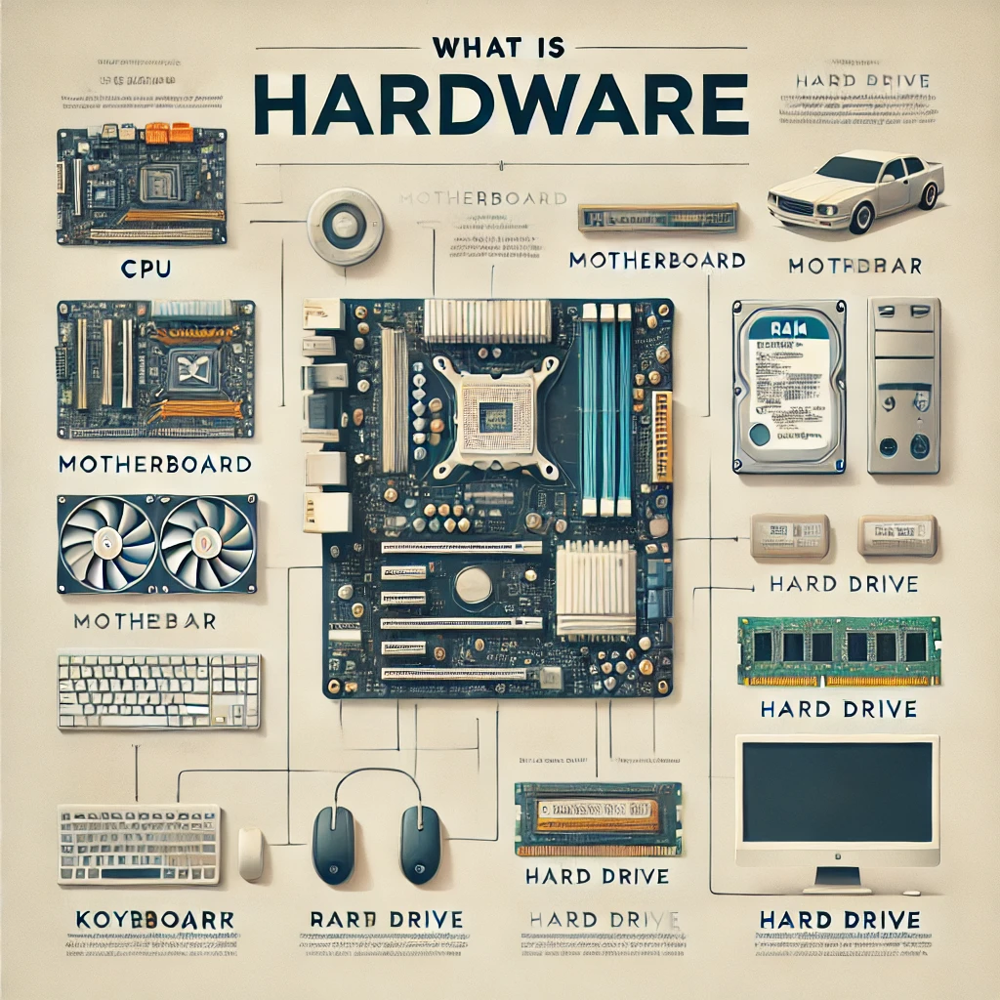
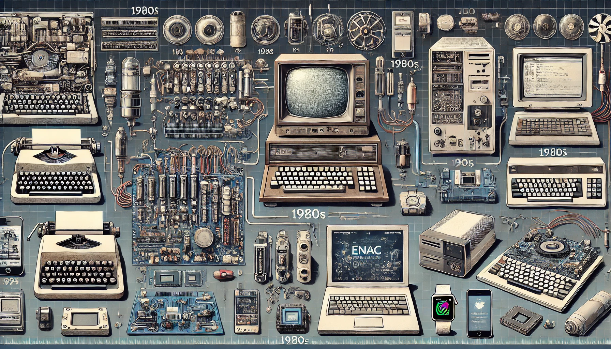
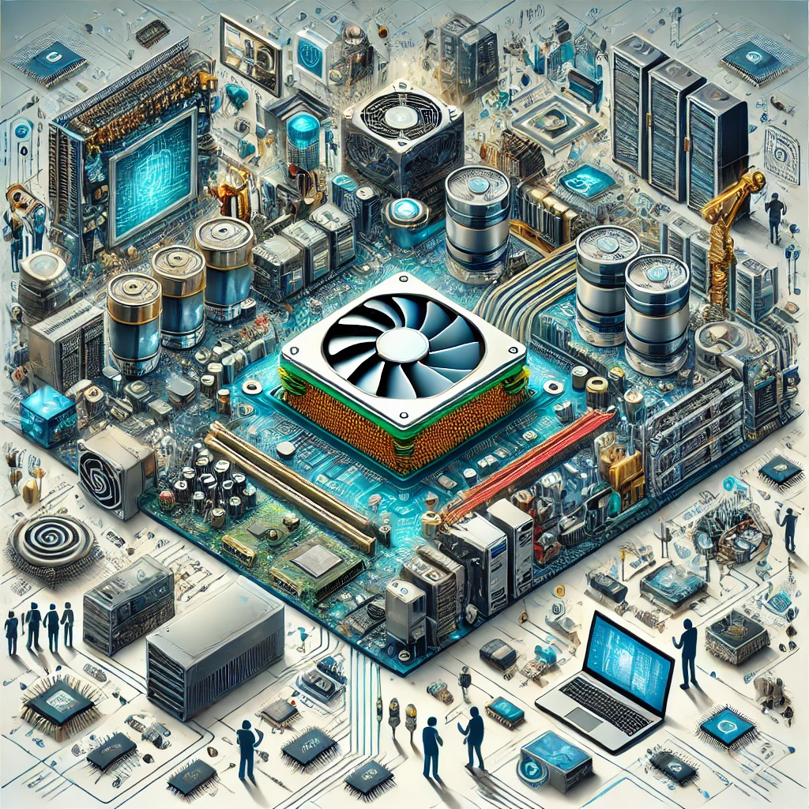

Mi Primer Blog En la IU Digital
Bienvenidos a mi Blog
Hola, soy Jeferson Cataño, estudiante de primer semestre de Ingeniería de Software y Datos
en la Universidad IU Digital de Antioquia. Este blog es un proyecto personal que he decidido desarrollar
en el marco de la asignatura Introducción a la Ingeniería de Software y Datos.
¿Qué encontrarán en este blog?
A lo largo de este semestre, iré compartiendo mis experiencias, aprendizajes,
y reflexiones mientras avanzo en mi formación como ingeniero. Aquí podrán encontrar:
publicación de entradas
Proyectos prácticos en los que aplicaré los conocimientos adquiridos
Retos y soluciones que enfrentaré durante el desarrollo de la asignatura.
Requerimientos de la asignatura
Objetivo del blog:
Mi objetivo principal con este blog es documentar mi proceso de aprendizaje,
así como servir de recurso para otros estudiantes que estén interesados en el
campo de la Ingeniería de Software y Datos. Además, quiero utilizar este espacio
para plasmar mi crecimiento académico y profesional, de manera que al final del semestre,
pueda tener un registro claro de mi evolución.
Los invito a seguirme en este viaje de descubrimiento y aprendizaje. Estoy seguro de que
será una experiencia enriquecedora, llena de desafíos y logros que me acercarán cada vez más
a mi meta de convertirme en un ingeniero competente y apasionado.
¡Gracias por acompañarme!
Información sobre el Hardware
El hardware es uno de los componentes fundamentales en el mundo de la
informática y la tecnología. Se refiere a todos los elementos físicos
que componen un sistema informático.
¿Qué es el Hardware?
El hardware es el conjunto de componentes físicos que forman parte de un
sistema informático. Estos componentes incluyen todas las partes tangibles
que puedes tocar, como la unidad central de procesamiento (CPU), la memoria,
los dispositivos de almacenamiento, los periféricos y otros dispositivos electrónicos.
Tipos de Hardware

1. Hardware Básico
- Procesador (CPU): Es el cerebro del ordenador,
encargado de ejecutar las instrucciones de los programas.
- Memoria RAM: Es la memoria de acceso aleatorio
donde se almacenan temporalmente los datos que el procesador necesita acceder rápidamente.
- Placa Base (Motherboard): Es la tarjeta principal del
sistema que conecta todos los componentes entre sí.
- Disco Duro (HDD/SSD): Es el dispositivo de almacenamiento donde se guardan los datos
de forma permanente.
- Fuente de Alimentación: Proporciona la energía necesaria a todos los componentes del sistema.
2. Hardware Periférico
- Teclado y Ratón: Dispositivos de entrada que permiten la interacción con el ordenador.
- Monitor: Dispositivo de salida que muestra la información visual al usuario.
- Impresora: Dispositivo de salida que permite imprimir documentos físicos.
- Altavoces y Micrófono: Dispositivos de entrada y salida de audio.
3. Hardware de Almacenamiento
- Unidades de Estado Sólido (SSD): Dispositivos de almacenamiento más rápidos
y duraderos que los discos duros tradicionales.
- Discos Duros (HDD): Dispositivos de almacenamiento
que usan platos magnéticos para guardar datos.
- Unidades Flash (USB): Dispositivos portátiles para almacenar y transferir datos.
4. Hardware de Red
- Tarjeta de Red: Componente que permite la conexión de un ordenador a una red.
- Router: Dispositivo que dirige el tráfico de datos entre redes, como Internet y una red local.
- Switch: Dispositivo que conecta varios dispositivos dentro de una misma red.
Evolución del Hardware

El hardware ha evolucionado rápidamente en las últimas décadas, con mejoras significativas en la velocidad,
capacidad y eficiencia energética. Los procesadores son cada vez más potentes, los dispositivos de almacenamiento
más rápidos y compactos, y los periféricos más inteligentes y conectados.
Importancia del Hardware

El hardware es esencial para el funcionamiento de cualquier sistema informático. Sin él,
no sería posible ejecutar software, procesar información ni interactuar con dispositivos digitales.
Además, la calidad y capacidad del hardware determinan en gran medida el rendimiento de un sistema y su
capacidad para manejar tareas complejas.
Tendencias Actuales en Hardware
- Computación en la Nube: Mucho del procesamiento y almacenamiento de datos se está moviendo a
la nube, reduciendo la necesidad de hardware potente en dispositivos individuales.
- Internet de las Cosas (IoT): La proliferación de dispositivos conectados está
impulsando el desarrollo de hardware más pequeño y eficiente.
- Inteligencia Artificial: Los avances en IA están llevando a la creación de
hardware especializado, como las unidades de procesamiento tensorial (TPU).
Conclusión
El hardware es una parte crucial de la tecnología moderna, y su desarrollo continuo es clave
para la innovación en todos los campos de la informática. Desde el ordenador personal hasta
los servidores en la nube, el hardware sigue siendo el pilar sobre el que se construyen los avances tecnológicos.